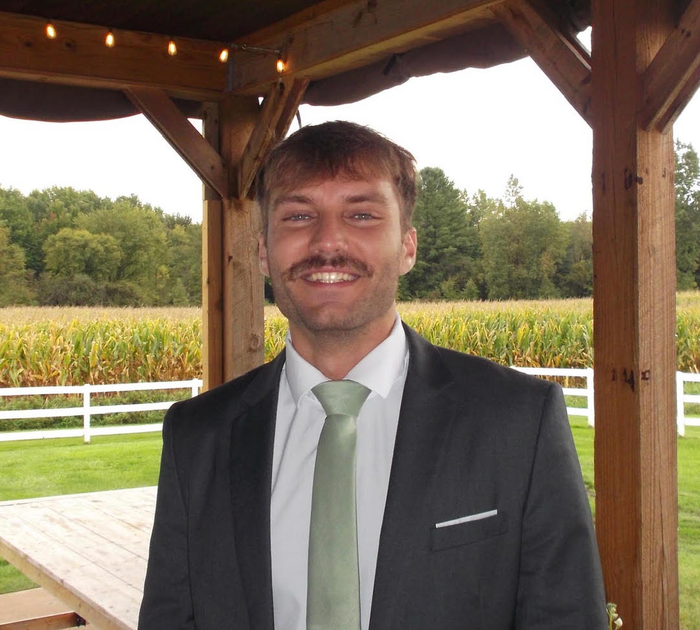

Behavioral Simulation
Hello! My name is
Will Mizer
Data Scientist & Analyst.
I turn messy data into decisions worth trusting, from cleaning and modeling through to the story a stakeholder actually needs to hear.

About
Data Science student at Florida Polytechnic University, building on an A.S. in Computer Programming & Analysis from the State College of Florida. I care about clean code, clear insights, and saying what the data actually shows.
When I'm not modeling, I'm probably rewatching The Lord of the Rings.
Toolkit
Python
pandas · numpy · matplotlib
scikit-learn
Statistical Analysis
SQL
Excel
Tableau
Power BI
Machine Learning
AWS / GCP
R · dplyr · ggplot2
PySpark · Hadoop
Education
Florida Polytechnic University
2024 - 2027B.S. Data Science · Expected May 2027
State College of Florida
2021 - 2023A.S. Computer Programming & Analysis · Dec 2023
Projects
Civic Data
Financial Risk
Real Estate Markets
Recommendation Systems
Experience
Current
Jan 2026 - Present
Undergraduate Researcher - LLM Bias & Responsible AI
Florida Polytechnic University · Lakeland, FL
- Researched discrimination in LLM resume classification, testing how pronoun, gender, and racial identity signals change model outcomes on otherwise identical resumes.
- Built a scalable data ingestion pipeline to feed large volumes of resume data through 5 different LLMs and automatically collect their responses for comparison.
- Compared outputs across models to identify which LLMs showed the strongest demographic bias in their classifications and recommendations.
- Led post-collection analysis and prepared findings for academic publication.
Bias Research
Responsible AI
Data Pipelines
Academic Publication
Prior
Jun 2026 - Present
Data Analyst Intern
One Alliance North America · Sarasota, FL
- Designed an end-to-end policy churn prediction framework from data research and ETL through feature engineering, model selection, tuning, and deployment.
- Developed baseline models using PyCaret and validated performance through walk-forward backtesting across rolling time horizons.
- Partnered with business departments to resolve domain edge cases and established a foundational model identifying $500,000 in at-risk annual recurring revenue.
- Authored production-grade technical documentation in LaTeX detailing pipeline mechanics, business context, and scaling roadmaps.
Python
PyCaret
XGBoost
SQL
LaTeX
Prior
Nov 2023 - Apr 2024
AI Data Analyst
TELUS International · Remote
- Performed detailed quality assurance and data validation across large-scale datasets to improve data quality for LLM training pipelines.
- Evaluated, annotated, and audited complex model responses to generate reliable datasets, enhancing safety alignment and output quality.
Quality Assurance
LLM Evaluation
Data Auditing